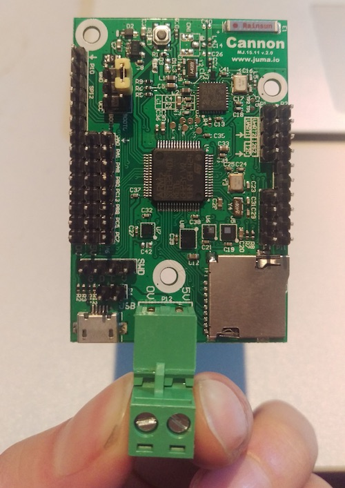
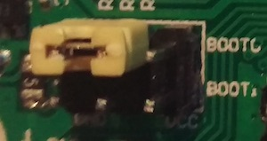
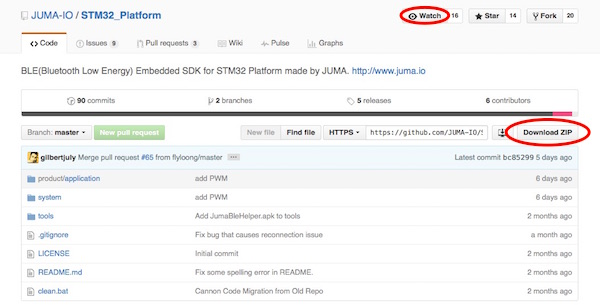
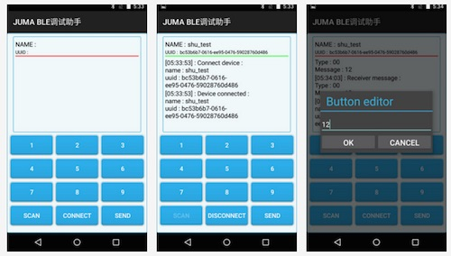
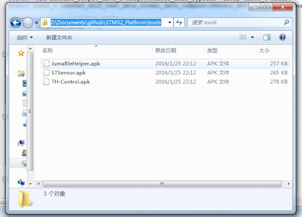

Cannon的第一次
本文介绍首次使用Cannon(即小钢炮，以下简称“Cannon”)开发平台的一些准备工作，包括：
- 重要的跳线和引脚
- 烧写器或调试器
- 开发环境
- Cannon代码和例程
- APP调试工具
强烈建议看完本片介绍后，再进行后续操作，请您有点耐心哦。^_^
开箱操作¶
1. 外观¶
拿到Cannon后，首先确保硬件外观良好，没有例如假焊、虚焊、漏焊或者PCB损害等现状。一个正常的Cannon看上去是下面这个样子的：

2. 跳线¶
STM32F401支持多种启动模式，一般情况下，应将Boot0接地，如下图所示：

- 本系列后续的介绍都是基于Boot0接地的前提条件。
- 关于STM32F401的不同启动模式，请查阅STM32F401的开发文档或芯片手册。
烧写器或调试器¶
Cannon支持STLink和J-Link两大烧写器或调试器，如果您手上没有，可以自行在“某宝”上购买。
1. STLink¶

2. J-Link¶

关于STLink和J-Link的使用和配置，请参阅左侧
Cannon的开发环境一篇。 不过先别急，建议您先看完本篇，做好所有的准备工作，我们一步步来。
准备开发环境¶
我们使用Keil V5作为Cannon的开发环境，如果您喜欢其他的ARM开发环境，如IAR等，当然也可以作为开发环境，不过本系列的介绍都是基于Keil的。
您可以从Keil的官网获取Keil的安装包，请访问：http://www.keil.com/
我们也将Keil V5.14版本的安装包上传至网盘，方便您的下载，请访问：http://pan.baidu.com/s/1jGTe0VO
- 关于Keil的使用和配置，请参阅左侧
Cannon的开发环境一篇。- 默认情况下，Keil为
试用版本，编译代码的时候会有32KB的大小限制，大家可以百度相关经验解决这个问题哦。
Cannon代码和例程¶
Cannon的SDK封装了蓝牙通信、中间件、底层驱动、任务调度等内容，为开发者提供便捷的应用层开发框架。SDK和应用层的例程现在已经完全开源，您可以访问github来获取相关代码。
Github上Cannon的代码空间：https://github.com/JUMA-IO/STM32_Platform

1. 代码下载¶
您可以点击右侧的Download ZIP打包下载整份代码，其中包括了几个部分：
- product/application: Cannon的应用层例程；
- system: Cannon的底层驱动、中间件、算法、任务调度、编程框架等；
- tools: 移动端的调试工具；
- documents: 包含了Cannon的电路图，以及一些板载芯片的手册；
2. 保持更新¶
Cannon是一个开源项目，我们包括全国的开发者都可以提交代码改动，如果您想及时收到更新通知，请点击上方的Watch。
如果您觉得Cannon项目有点意思，符合您的品味，您也可以为我们点一个赞，就是点击旁边的Star按钮，小编在此先谢过啦。
3. 提交代码¶
日后，如果您在使用Cannon的过程中发现Bug，或者想给Cannon增加一些新的功能，也欢迎您给我们提交代码。您可以点击左侧的90 commits，查看Cannon代码提交的历史记录。
- 如果您只是想试用一下Cannon，那打包下载好代码即可，不需了解“保持更新”、“提交代码”等事宜。
- github基于git的工作原理，如果您想学习git，这里有一篇很好的入门文章。
手机端的调试工具¶
为了方便调试嵌入式代码，我们提供了手机端的BLE调试助手，可以实现手机和设备之间原始数据的收发。现在您可以从Appstore、应用宝等应用市场直接下载，或者自行编译源码。

1. 应用市场下载安装¶
- iOS版本: BLE调试助手_AppStore
- Android版本: BLE调试助手_应用宝
在您的手机上，打开Appstore、应用宝等应用市场，搜索“BLE调试助手”便可找到。
2. 源码编译安装¶
- iOS版本: BLE调试助手_iOS_Github
- Android版本: BLE调试助手_Android_Github
3. Android手机直接安装APK文件¶
如果您使用Android手机，可以直接安装BLE调试助手的APK文件。打包下载好github上的文件后，APK文件位于：
X:\STM32_Platform\tools\JumaBleHelper.apk

如果您不知道如果将APK安装至手机，请参阅这篇文章哦。